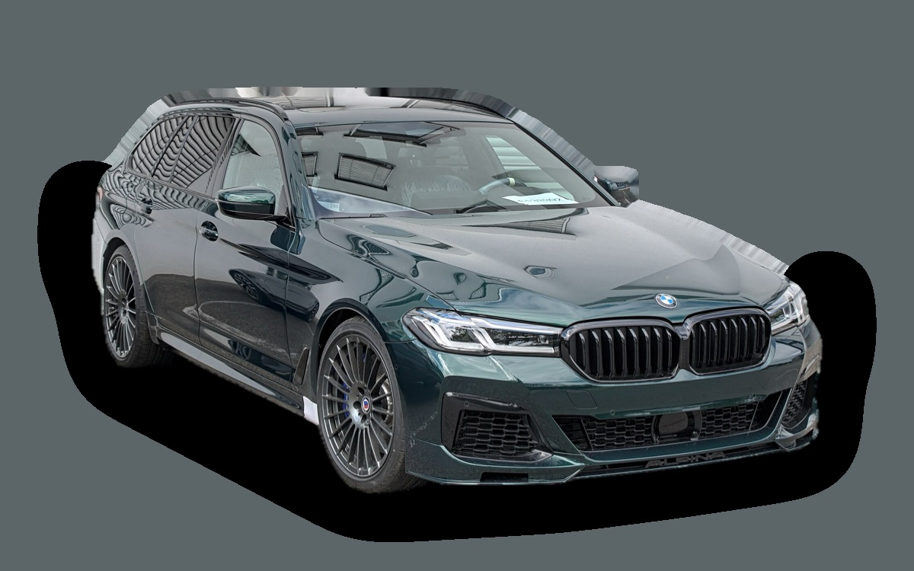

What does a BMW 5 Series Touring cost per month?
A 2020 BMW 5 Series Touring costs about SEK 4,954 a month, all in.
SEK 4,954per month, 2020 model
SEK 260,000price, 2020 model
SEK 554,800last new price
Bvalue grade (2020)

_Facelift_IMG_8792.jpg){kind=link}
Monthly cost by model year
| Model year | Version in the calculation | Price | Per month | Grade |
|---|---|---|---|---|
| 2023 | 520d xDrive 190, Sport Line | SEK 340,000 | SEK 5,336 | B |
| 2020 | 520d xDrive 190, Sport Line | SEK 260,000 | SEK 4,954 | B |
| 2017 | 520d xDrive 190, Sport Line | SEK 150,000 | SEK 4,327 | A |
Based on 5 years of ownership and 12,500 km a year, with fuel prices from 2026-10-22. The monthly cost includes depreciation, fuel, servicing and repairs, insurance and road tax.
How the cost splits for a 2020 car
- Depreciation: SEK 1,661/mo
- Fuel: SEK 1,545/mo
- Servicing and repairs: SEK 985/mo
- Insurance: SEK 492/mo
- Road tax: SEK 271/mo
Used prices in ads
| Model year | Median price | Ads | Typical mileage |
|---|---|---|---|
| 2023 | SEK 369,000 | 46 | 88,000 km |
| 2022 | SEK 329,000 | 36 | 109,000 km |
| 2021 | SEK 289,900 | 35 | 125,000 km |
| 2020 | SEK 279,000 | 53 | 130,000 km |
| 2019 | SEK 235,000 | 36 | 156,000 km |
| 2018 | SEK 199,700 | 47 | 190,000 km |
| 2017 | SEK 158,000 | 44 | 195,000 km |
The median price in Swedish ads by model year in October 2026 (source: Blocket). Ad prices are asking prices, and the final price may be lower.
Engines and versions
| Engine | Fuel | Power | 0–100 km/h | Consumption (WLTP) | Range | Model years | Extra cost |
|---|---|---|---|---|---|---|---|
| 520d xDrive 190 | Diesel | 190 hp | 7.8 s | 5.4 l/100 km | – | 2017–2023 | – |
| 530e laddhybrid 292 | Plug-in hybrid | 292 hp | 6 s | 2 l/100 km + 16 kWh/100 km | – | 2021–2023 | +SEK 73,500 |
| 540i xDrive 340 | Petrol | 340 hp | 5.1 s | 7.6 l/100 km | – | 2017–2023 | +SEK 109,000 |
- Trim: Sport Line, M Sport (+SEK 50,000)
Facts
- Body
- Estate
- Model years
- 2017–2023
- Last new price
- SEK 554,800
- Boot
- 570 litres
- Euro NCAP
- 5 of 5 stars
- New-car warranty
- 3 years
- Reliability
- 3 of 5
- Comprehensive insurance, estimate
- SEK 9,400/yr
- Servicing, estimate
- SEK 5,600/yr
Common faults to watch for
- Oil leaks (valve cover, oil filter housing), repair about SEK 5,000
- EGR cooler and particulate filter (diesel), repair about SEK 9,000
- Turbocharger (B47 diesel), repair about SEK 20,000
- Electric water pump and thermostat, repair about SEK 7,000
- Transfer case (xDrive), repair about SEK 18,000
- Rear air suspension, repair about SEK 5,500
The faults apply to some engines and model years. The calculator works out the risk for the exact version you choose.
Pros and cons
Pro
Comfortable and fun to drive, with a strong plug-in hybrid.
Con
Expensive servicing, and this generation is no longer made.
Similar cars
 Subaru OutbackSEK 4,783/mo as a 2023 model
Subaru OutbackSEK 4,783/mo as a 2023 model Audi A6 AvantSEK 5,161/mo as a 2023 model
Audi A6 AvantSEK 5,161/mo as a 2023 model Audi A4 AvantSEK 4,676/mo as a 2021 model
Audi A4 AvantSEK 4,676/mo as a 2021 model Skoda Superb Estate IIISEK 4,492/mo as a 2020 model
Skoda Superb Estate IIISEK 4,492/mo as a 2020 model Volkswagen TouranSEK 4,434/mo as a 2022 model
Volkswagen TouranSEK 4,434/mo as a 2022 model Skoda Superb EstateSEK 5,585/mo as a 2026 model
Skoda Superb EstateSEK 5,585/mo as a 2026 model
Updated 2026-10-29 · ad data Oct 2026